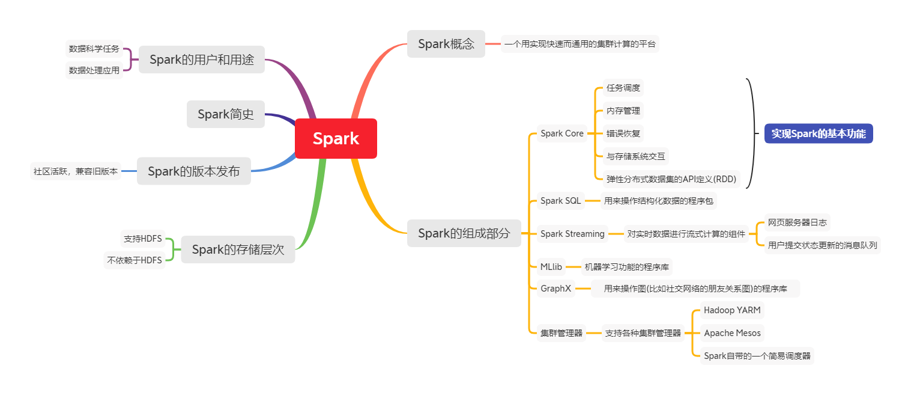
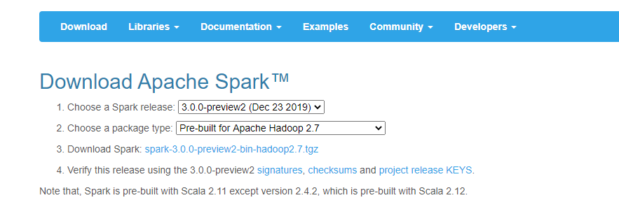
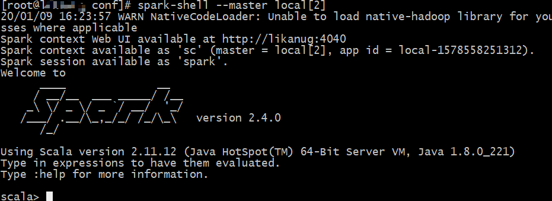
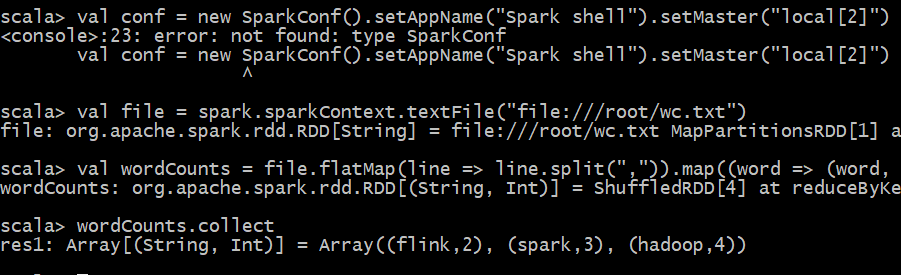

Spark大数据分析学习笔记(一)
Spark基本结构图

Spark开发环境搭建
LInux下安装Spark
下载安装
官方下载地址：http://spark.apache.org/downloads.html

下拉到页面最底部,我们选择spark-2.4.0
下载完之后上传到服务器，使用下面命令安装
1
tar -zxvf spark-2.4.0-bin-hadoop2.6.tgz -C /usr/local/apps/
配置环境变量
1
2
3
4
5
6
7
8
9vim /etc/profile
#在最底部添加下列配置
export SPARK_HOME=/usr/local/apps/spark-2.4.0-bin-hadoop2.6
export PATH=${SPARK_HOME}/bin:$PATH
#修改日志配置文件
cd $SPARK_HOME/conf
cp log4j.properties.template log4j.properties
:19 #移动到19行
#将 log4j.rootCategory=INFO, console的INFO替换成WARNLocal模式验证安装成功
1
2# 启动spark-shell
spark-shell --master local[2]出现如下界面说明启动成功，第一行有一个没有hadoop的warn,这个不用管，因为我们本来就没有装

词频统计案例
创建wc.txt文件
1
2
3
4
5
6
7cd ~ # 回到家目录
vi wc.txt
#添加下列字符
hadoop,spark,hadoop
spark,flink,flink,spark
hadoop,hadoop
#保存退出执行RDD
连接Spark客户端，在Spark客户端依次执行执行下列命令
1
2
3scala> val file = spark.sparkContext.textFile("file:///root/wc.txt")
scala> val wordCounts = file.flatMap(line => line.split(",")).map((word => (word, 1))).reduceByKey(_ + _)
scala> wordCounts.collect出现如下界面说明运行成功

Scala本地开发环境配置
关于Scala的开发环境搭建，其实就是在IDEA上安装Scala的插件和SDK,windows下的安装安装比较简单就不一一讲解了
Scala可以到Scala官网下载
-------------本文结束感谢您的阅读-------------